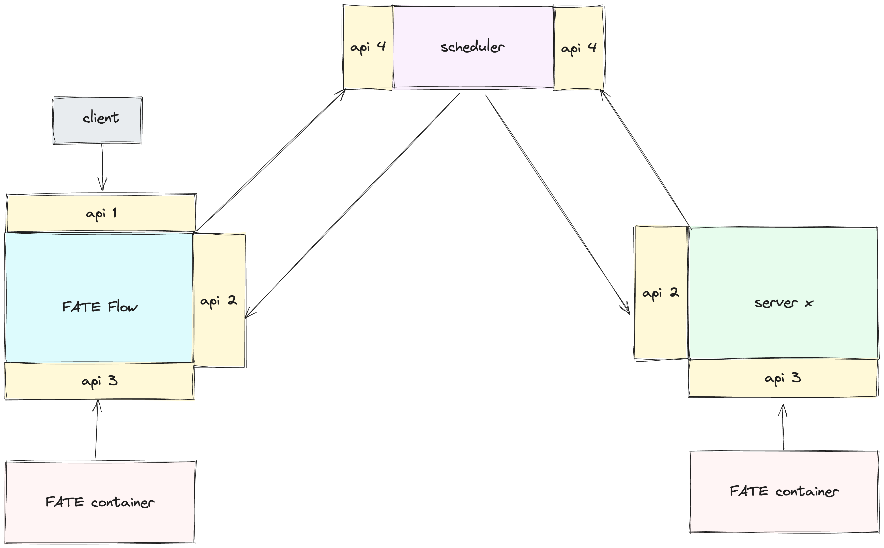
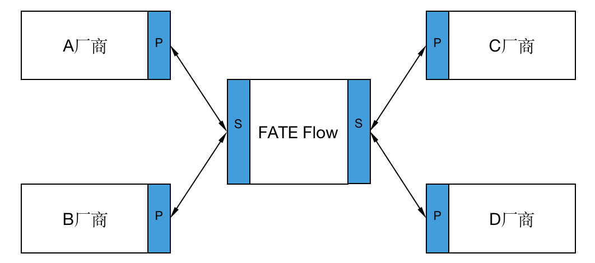
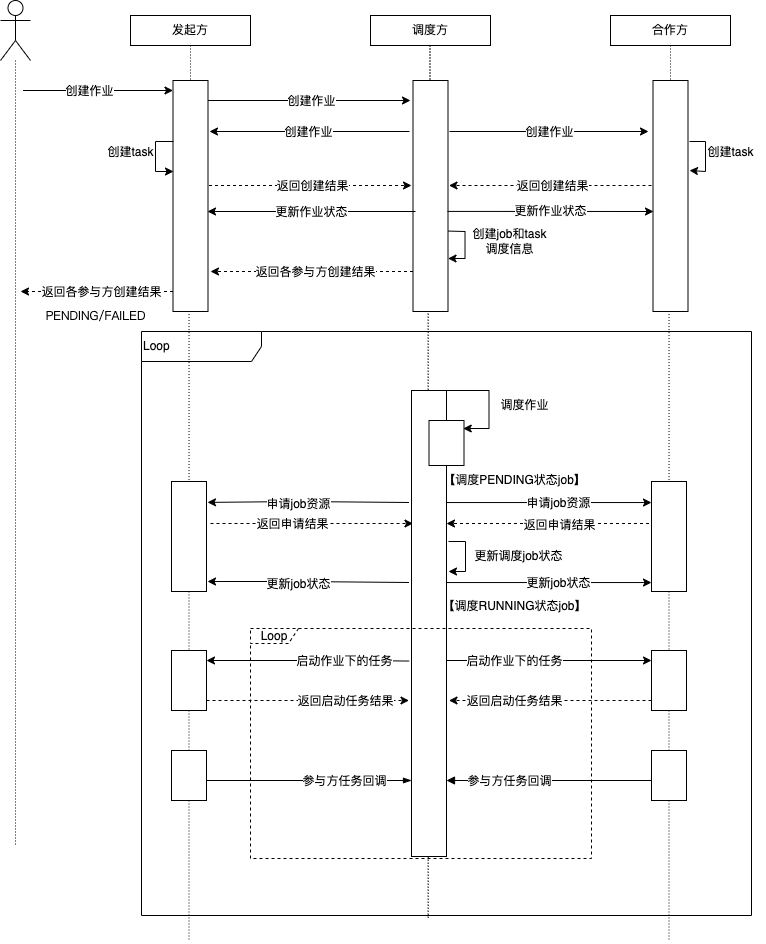
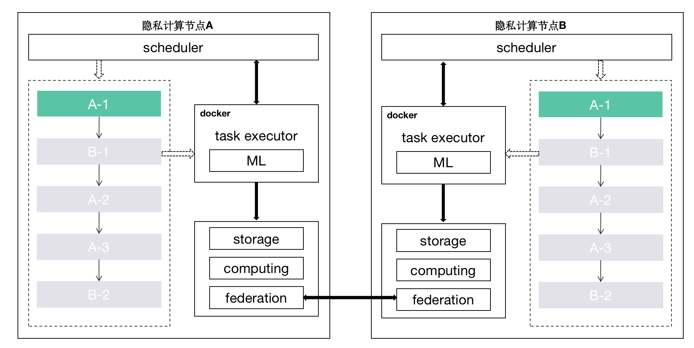

FATE 2.0 版本互联互通接入指南¶
1. FATE Flow接入指南¶
- 说明：此章节为异构调度平台对接FATE调度平台FATE FLow的接入指南
- 场景：本方为待接入系统，合作方为FATE站点
1.1 接口¶
 FATE flow接口划分为4类： - 1负责接收来自上层系统的请求，如提交、停止、查询作业等； - 2负责接收来自调度层的请求，如开始、停止任务等； - 3负责接收来自算法容器的请求，如任务的状态、输入上报等 - 4负责来自平台层的请求，并分发给各个参与方的接口2，如创建作业，停止作业等
1.1.1 api-1¶
说明：由于是对接上层系统，并不涉及调度之间的交互，非必需接口，可自定义实现，接口层面不做约束。
1.1.2 api-2¶
可参考接口实现
- /v2/partner/job/create: 创建作业
- /v2/partner/job/start: 开始作业
- /v2/partner/job/status/update: 更新作业状态
- /v2/partner/job/update: 更新作业(如进度信息)
- /v2/partner/job/resource/apply: 申请作业资源
- /v2/partner/job/resource/return: 归还作业资源
- /v2/partner/job/stop: 停止作业
- /v2/partner/task/resource/apply: 申请任务资源
- /v2/partner/task/resource/return: 归还任务资源
- /v2/partner/task/start: 开始任务
- /v2/partner/task/collect: 调度层收集任务状态
- /v2/partner/task/status/update: 更新任务状态
- /v2/partner/task/stop: 停止任务
- /v2/partner/task/rerun: 重跑任务
1.1.3 api-3¶
可参考接口实现
- /v2/worker/task/status: 状态上报
- /v2/worker/model/save: 模型存储
- /v2/worker/model/download: 模型下载
- /v2/worker/data/tracking/query: 查询数据
- /v2/worker/data/tracking/save: 记录数据
- /v2/worker/metric/save/<execution_id>: 记录指标
1.1.4 api-4¶
可参考接口实现
- /v2/scheduler/job/create: 创建作业、
- /v2/scheduler/job/stop: 停止作业
- /v2/scheduler/task/report: 任务上报(如状态)
- /v2/scheduler/job/rerun: 重跑作业
1.2 调度器¶
调度器主要包括两部分：调度逻辑和调度接口。异构的场景下的调度层想要实现互联互通，统一的调度流程和接口是不可或缺的。上述提到若使用FATE Flow作为调度方，与其它厂商互联时，可忽略调度器的实现。
1.2.1 方案¶
调度的核心是调度流程，流程定义作业的生命周期。在FATE 1.x版本中调度器与发起方逻辑是绑定的，即多方作业的协调调度是在发起方。 这样有个弊处：假设A、B、C三家厂商各自都有发起任务的需求，他们的调度层都需要基于相同的调度逻辑实现调度器，互联互通的成本较高。 在2.0版本中，将调度模块中的发起方与调度方逻辑解耦，且调度方可以在作业配置中被指定。在上诉的案例中，只要A、B、C厂商中的任意一家实现了调度器， 或者直接使用FATE作为调度方，其他厂商只需要实现调度客户端接口，即可满足需求，大大降低互联互通成本。

P代表调度客户端接口，S代表调度器接口
举个例子简单说明下该调度模式：假设A想要和C创建作业，调度方为FATE Flow。首先A请求FATE-FLow S(create-job)接口, FATE FLow收到请求后通过job配置获取参与方信息(A、C)，随即分发给参与方各自的P(create-job)接口。
1.2.2 调度逻辑¶
对作业的生命周期管理，主要包括作业何时启停、任务何时启停、DAG解析、组件运行依赖等等。FATE FLow的调度流程按任务状态获取模式分为两种: callback和poll。其中callback模式是由各参与方主动上报任务状态给调度方，poll模式是调度方定时向各参与方拉取任务状态。 两种模式对应的调度流程图如下：

callback模式
poll模式
1.2.3 调度接口¶
负责来自平台层的请求，并分发给各个参与方的api-2，如创建作业，停止作业等。接口见api-4
2 算法接入指南¶
在FATE 历史版本中，算法是以调度服务启动的本地进程方式运行，在扩展性方面存在不足，很难满足互联互通的需求。在2.0版本中采用“算法容器”运行算法， 通过制定统一的算法镜像构建标准与定义一套规范的镜像加载机制来实现异构算法调度功能。 
2.1 FATE算法容器化方案¶
2.2 接入¶
2.2.1 算法参数¶
FATE FLow会以环境变量的形式将参数传递给算法容器，环境变量的key为"CONFIG"，参数值为JSON字符串。内容如下：
component: psi
computing_partitions: 8
conf:
computing:
metadata:
computing_id: 202402271112016150790_psi_0_0_host_9998
host：127.0.0.1
port:4670
type: standalone/eggroll/spark
device:
metadata: {}
type: CPU
federation:
metadata:
federation_id: 202402271112016150790_psi_0_0
parties:
local:
partyid: '9998'
role: host
parties:
- partyid: '9999'
role: guest
- partyid: '9998'
role: host
osx_config:
host: 127.0.01
port: 9370
type: osx
logger:
config:
storage: standalone/eggroll/hdfs
engine_run:
cores: 4
input_artifacts:
data:
input_data:
output_artifact_key: output_data
output_artifact_type_alias: null
parties:
- party_id:
- '9998'
role: host
producer_task: reader_0
model: null
job_id: '202402271112016150790'
launcher_conf: {}
launcher_name: default
mlmd:
metadata:
api_version: v2
host: 127.0.0.1
port: 9380
protocol: http
type: flow
model_id: '202402271112016150790'
model_version: '0'
parameters: {}
party_id: '9998'
party_task_id: 202402271112016150790_psi_0_0_host_9998
provider_name: fate
role: host
stage: default
task_id: 202402271112016150790_psi_0
task_name: psi_0
task_version: '0'
2.2.2 注册算法镜像¶
flow provider register -c examples/provider/register_image.json
{
"name": "fate",
"device": "docker",
"version": "2.1.0",
"metadata": {
"base_url": "",
"image": "federatedai/fate:2.1.0"
}
}
2.2.3 使用算法镜像¶
注册完成后，在作业配置的DAG中可以指定provider来运行此fate算法镜像，参考如下：
dag:
conf:
task:
provider: fate:2.1.0@docker